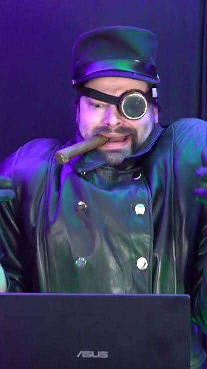

On the decks
DJing
graeme loves to DJ, feeding off the raw energy of a crowd. Every set is a chance to read a room, take risks, and sharpen the same musical instincts that shape the songs he writes.